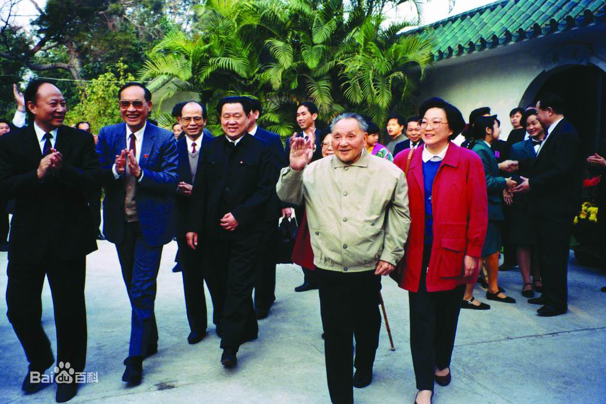

邓小平
中国社会主义改革开放和现代化建设的总设计师

小平同志入住深圳迎宾馆桂园（1992年）
Here is the time line of Deng's life
- 1978，召开的中共十一届三中全会，开辟了中国改革开放和集中力量进行社会主义现代化建设的新时期。
- 1979，中美正式建立外交关系后访问美国，是新中国领导人第一次访美。
- 1980，辞去国务院副总理职务。
- 1981，中共十一届六中全会通过邓小平主持起草的《关于建国以来党的若干历史问题的决议》。决议彻底否定了“文化大革命”，全面评价了毛泽东的历史地位，提出必须坚持和发展毛泽东思想。会议选举邓小平为中央军委主席。
- 1982,中共十二次全国代表大会召开，他在开幕词中提出：“把马克思主义的普遍真理同我国的具体实践结合起来，走自己的路，建设有中国特色的社会主义。”
- 1982，中共十二届一中全会召开，选举邓小平为中央政治局常务委员，决定他任中央军委主席。9月13日，在中共中央顾问委员会第一次全体会议上，当选为中央顾问委员会主任。9月24日，会见英国首相撒切尔夫人，阐述中国对香港问题的基本立场，为以后中英两国政府的谈判定了基调。
- 1983，在第六届全国人大第一次会议上，当选为中华人民共和国中央军事委员会主席。
- 1984，在中华人民共和国成立35周年庆祝典礼上检阅部队并讲话。12月19日，出席中英两国政府关于香港问题联合声明的签字仪式。
- 1985，在中央军委扩大会议上宣布，中国政府决定裁减军队员额100万，并阐述了中共十一届三中全会以后对国际形势判断和对外政策的两个重要转变。
- 1986，对四位科学家提出的关于跟踪世界高技术发展的建议批示：“这个建议很重要，不可拖延”。11月，中共中央、国务院批准《高技术研究发展计划纲要》，简称863计划。
- 1987，针对1986年底一些高等院校少数学生闹事，多次谈话指出，要加强四项基本原则教育，旗帜鲜明地反对资产阶级自由化；要有领导有秩序地进行社会主义建设。4月13日，出席中葡两国政府关于澳门问题联合声明的签字仪式。11月，根据中共十三届一中全会决定，任中央军委主席。
- 1989，针对北京发生的动乱，两次发表谈话，对中共中央政治局常委会关于平息动乱、稳定局势的决定，表示完全赞同和支持。
- 1989,在中共十三届五中全会上，他辞去了最后担任的中央军委主席职务。
- 1990，第七届全国人大第三次会议接受邓小平辞去中华人民共和国中央军事委员会主席职务。
“邓小平对整个世界最大贡献就在于，他向全世界表明，中国可以如何管理和快速发展；而中国又能够因此向整个世界作出何等的贡献。”对于“一国两制”成功解决香港问题，他说：“这无论对中国、英国、香港本身，还是对世界都是最圆满的结果。”
——英国前首相爱德华·希思
If you have time, you should read more about this incredible human being on his baidu baike.